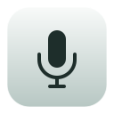

01One shortcut.
One shortcut.
Whatever’s in front.
Mute from your meeting, your notes, or your next tab. Hold to talk. Hold to mute. Make the shortcuts yours.
control⌃
option⌥
M
⌘ A little utility for your Mac
One shortcut to go quiet.
A little clarity when things go silent.
Native macOS app. No account. No subscription.
Less “can you hear me?”
Hush lives in your menu bar, ready for the small
mic moments that interrupt your day.
Mute from your meeting, your notes, or your next tab. Hold to talk. Hold to mute. Make the shortcuts yours.
See the apps that use your mic now, and the ones that used it recently. History stays on your Mac.
Illustrative activity · macOS 14.2+
An app uses your mic while it’s muted? A small reminder helps you catch it. Unmute in one click, or dismiss it for that session.
A closer look
Get a feel for Hush’s controls.
This preview never touches your microphone.
Click to mute the preview.
Preview only. Your real microphone is unchanged.
Thoughtful little details
Mute on lock or sleep. Choose your launch state. Set a timer to re-mute after you go live.
Opt in to live levels and warnings after 10 seconds of weak or missing input. Audio stays in memory.
A movable status pill, separate sound and overlay settings, and URL commands for automation. No Dock icon.
Your mic. Your business.
No account, ads, or analytics in the app. Basic mute controls need no microphone or Accessibility permission. Optional levels and recording tests ask for mic access.
Read the privacy detailsHush controls supported audio input devices at the system level. It uses the input mute control, or sets input volume to zero. If a device cannot be muted, Hush shows a warning. It does not sync the mute button inside your meeting app.
Not in this release. Hush shows which apps use the mic, but its mute controls apply to audio input devices. There are no per-app Pause or Resume buttons.
Mute controls and app detection do not read audio. Optional level monitoring processes audio locally and saves none. The optional microphone test saves recordings and reports on your Mac.
Basic controls target macOS 13 or later. Named app activity needs macOS 14.2 or later. The current release candidate targets Apple silicon. Intel compatibility and wider hardware testing remain pending.
The beta is free, ad-hoc signed, and not notarized by Apple. macOS may block first launch. Native Shortcuts actions may not run in this build; use the hush:// URL commands instead. Wider hardware testing is still in progress. Read the installation guide before downloading.

Hush for Mac
Try the free beta. Make your mic feel a little more yours.
Download the betaAd-hoc signed. Not notarized. macOS may block first launch.
1.3.2 beta 1 · Apple silicon · macOS 13+